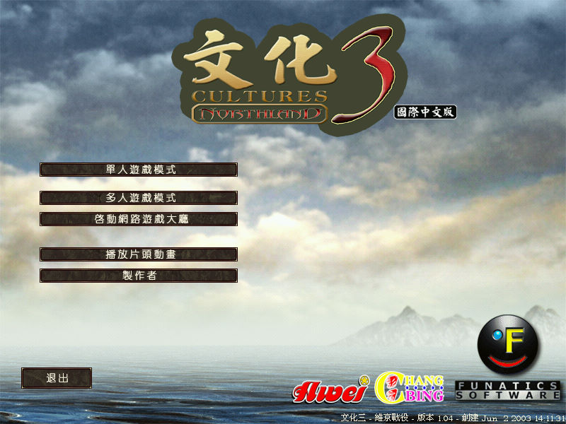
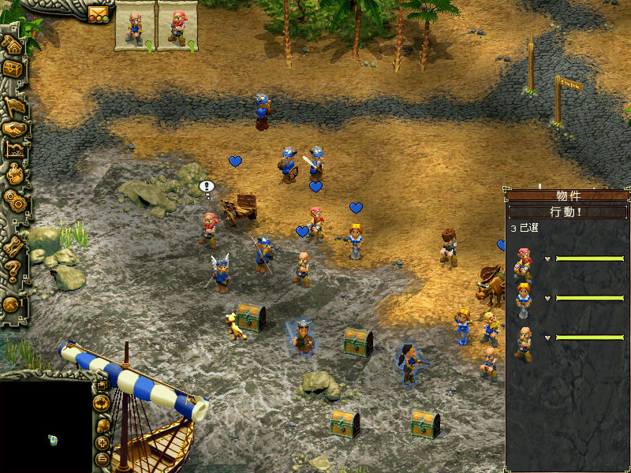

名稱：文化3：維京戰役／北陸風雲／北國風雲 (Cultures 3: NorthLand，中文／英文版)
簡介：Funatics 2003年出品的城鎮建造模擬遊戲，由GMX代理發行，2004年由彰賓中文化並
代理發行 [待補]。


保護：光碟，破解碼：
Game.exe
0F 84 8E 00 00 00 57 8D 85
-- -- A9 -- -- -- -- -- --
備註：由於程式誤寫，會導致遊戲光碟永遠檢驗不到，可進行下列修正（或用破解碼）：
Game.exe
75 3E FF 75 0C (檢驗失敗，繼續下個非硬碟的磁碟，否則會只檢驗第一個)
-- 31 -- -- --
74 14 FE 45 FF (有AutoExec.exe的才通過，原程式寫成沒有的才通過)
75 -- -- -- --
備註：繁中版為1.04版。
備註：執行Game_TW.exe或LG_Main.exe為中文版，執行Game.exe為英文版。